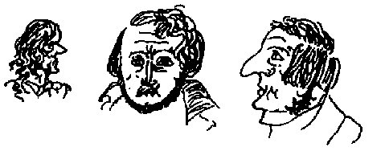
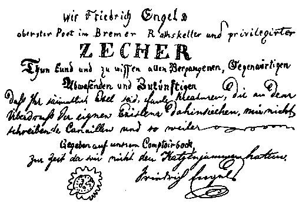

Letters of Frederick Engels
Source: MECW Volume 2, p. 481
Written: 13 November 1839
First published: in part in Die neue Rundschau, 10. Heft, 1913, and in: F. Engels, Schriften der Frühzeit, Berlin, 1920
Nov. 13, 1839. Dearest Guilielme, why don’t you write? You all belong to the category of idlers and loungers. But I am a different fellow! Not only do I write to you more than you deserve, not only am I acquiring an exceptional acquaintance with all literatures of the world, I am also quietly making for myself in short stories and poems a memorial of glory which, unless the censor’s breath turns the bright gleam of steel to ugly rust, will shine in brilliant, youthful radiance through all German lands, Austria excepted. In my breast it ferments and boils, in my sometimes drunken head it glows quite exceptionally; I long to find a great thought which will clear the ferment and blow the glow into a bright flame. A splendid subject, compared with which all my previous ones are mere childishness, is working upwards in my mind. What I want to do is to reveal in a “fairy story” or something like that those foreshadowings of the modern world that showed themselves in the Middle Ages; I want to uncover those spirits who knocked under the hard crust of the earth for release, buried beneath the foundations of churches and dungeons. I want to try and resolve at least part of Gutzkow’s task: the true second part of Faust — Faust no longer an egoist but sacrificing himself for mankind — has yet to be written. There is Faust, there is the Wandering Jew, there is the Wild Huntsman, three types of the anticipated spiritual freedom which can easily be placed in connection and relation with Jan Huss. What a poetic background is given to me there, against which these three demons work their will! The idea of the Wild Huntsman, formerly begun in metre, has merged into it. These three types (why don’t you write, you fellows? Nov. 14) I shall treat in a most original manner; I promise myself a particular effect from the interpretation of Ahasuerus and the Wild Huntsman. To make the subject more poetic and the details more significant I can easily weave in other things from German tradition — but there is time for that yet. While the short story I am working on at present is more of a mere study in style and character portraying, this is to be the real thing on which I found my hopes for my name.
Nov. 15. No letter today either? What shall I do? What shall I think of you? I can’t understand you. Nov. 20. And if you don’t write today I shall geld you in thoughts and make you wait as long as you do me. An eye for an eye, a tooth for a tooth, a letter for a letter. But you hypocrites say: Not an eye for an eye, not a tooth for a tooth, not a letter for a letter, and fob me off with your damned Christian sophistry. No, better a good pagan than a bad Christian.

A young Jew has arisen, Theodor Creizenach, who writes most excellent poems and even better verses. He has written a comedy [Th. Creizenach, Der schwäbische Apoll] in which W. Menzel and company are ridiculed in the most priceless fashion. Everybody is now flocking to the modern school and building houses, palaces or little huts on the foundation of the great ideas of the time. Everything else is going to the dogs, sentimental little songs die away unheard, and the ringing horn waits for a huntsman to sound it for the hunting of tyrants; and God’s storm rustles in the tree-tops and the youth of Germany stand in the grove, clashing their swords and raising high their brimming cups; from the mountain-tops the burning castles blaze, thrones shake, altars tremble, and if the Lord calls in storm and thunder: Forward, forward! who will resist us?
[Further comes the following joking text: “We, Friedrich Engels, supreme poet in the Bremen town-hall cellar and privileged boozer, announce and make known to all and sundry, past, present, absent and future, that you are all asses, lazy creatures, who are wasting away from disgust with your own existence, scoundrels who don’t write to me, and so on, and so on. Written on our office stool at a time when we had no hangover. Friedrich Engels”.]

In Berlin lives a young poet, Karl Grün, of whom I have these days read a Buch der Wanderungen which is very good. But he is said to be twenty-seven already, and at that age he should be able to write better. Now and again he has very striking thoughts, but often dreadful Hegelian phrases. What does this mean, for instance: “Sophocles is the highly moral Greece which lets its titanic outbursts break against the wall of absolute necessity. In Shakespeare the concept of absolute character made its appearance.”
The night before last I had a great booze-up in the wine cellar on two bottles of beer and two and a half bottles of 1794 Rüdesheimer. My prospective publisher and diverse philistines were with me. Specimen of an argument with one of these philistines on the Bremen constitution: I: In Bremen the opposition to the government is not of the right kind since it consists of the money aristocracy, the aldermen who oppose the aristocracy of rank, the Senate. He: You cannot really maintain that, can you? I: Why not? He: Prove your assertion. — That sort of thing passes for argument here! Oh, you philistines, go and learn Greek, and come again. Anyone that knows Greek also knows how to argue rite. I can argue six such fellows to death at once, even if I am half-seas over and they are sober. These people cannot follow a thought through to its necessary conclusions for three seconds, but everything goes in spasms; you only need let them speak for half an hour, throw in a few seemingly innocent questions, and they contradict themselves splendidamente. They are dreadfully stolid people, these philistines; I began to sing, but they resolved unanimously against me that they would eat first, and then sing. They stuffed themselves with oysters, while I went on angrily smoking, drinking and shouting without taking any notice of them, until I fell into a blissful slumber. I am now a large-scale importer of banned books into Prussia; Börne’s Franzosenfresser in four copies, the Briefe aus Paris by the same, six volumes, Venedey’s Preussen und Preussenthum, most strictly prohibited, in five copies, are lying ready for dispatch to Barmen. The last two volumes of the Briefe aw Paris I had not yet read; they are magnificent. King Otto of Greece is given a terrible going-over; thus he says on one occasion:
“If I were God I would have great fun: I would let all the great Greeks rise again one night.”
[L. Börne, Briefe aus Paris, Brief 89]
Then comes a very fine description of how these Hellenes walk about in Athens, Pericles, Aristotle and others. Then it is announced: King Otto has come. Everybody gets up, Diogenes trims his lamp, and all hurry to Piraeus. King Otto has landed and is making the following speech:
“Hellenes, look up. The sky has taken on the Bavarian national colour.” (This speech is really too good, I must copy it out in full.) “For in the most ardent times Greece belonged to Bavaria. The Pelasgians lived in the Odenwald, and Inachus was born in Landshut. I have come to make you happy. Your demagogues, seditionists and journalists have brought your beautiful land to ruin. The fatal freedom of the press has thrown everything into confusion. Just see what the olive-trees look like. I would have come to you long ago, but I could not do so, for I have not yet been long in this world. Now you are a member of the Deutsche Bund; my ministers will inform you of the latest decisions of the Bund. I shall know how to safeguard the rights of my crown and by and by make you happy. For my civil list” (salary of the king in a constitutional state) “you shall annually give me 6 million piastres, and I allow you to pay my debts.” [ibid.]
The Greeks become confused, Diogenes shines his lamp in the king’s face, and Hippocrates has ordered six cartloads of hellebore to be fetched, etc., etc. This whole ironical poem is a masterpiece of biting satire and written in a style that is divine. The reason why you like Börne less is because you are reading one of his weakest and earliest works, the Schilderungen aus Paris. The Dramaturgische Blätter, the criticisms, the aphorisms, but above all the Briefe aus Paris and the marvellous Franzosenfresser stand infinitely higher. The description of the collection of paintings is very boring, there you are right. But the grace, the Herculean strength, the depth of feeling, the devastating wit of the Franzosenfresser are unsurpassable. I hope we shall meet at Easter or else in the autumn in Barmen, and then you shall get a better idea of this Börne. — What you write about Torstrick’s duel is indeed different from his own version, but in any case he is the one who had the most unpleasantness from it. He is a good fellow, but he lives in extremes, now drunk, then a little pedantic.
Continuation. If you are of the opinion that German literature has gradually fallen asleep, you are greatly mistaken. Don’t think that because you hide your head from it like an ostrich and don’t see it, it has ceased to exist. Au contraire, it is developing quite appreciably, as would be clear to you if you paid more attention to it and didn’t live in Prussia, where the works of Gutzkow, etc., first require a special and rarely granted permission. — You are equally mistaken in thinking I should return to Christianity. Pro primo, it is ridiculous to me that I no longer count with you as a Christian, and pro secundo, that you think anyone who for the sake of the Idea has stripped off what is fantastical in orthodoxy could submit to that strait jacket again. A true rationalist can perhaps do so by acknowledging that his natural explanation of miracles and his shallow moralising are insufficient; but mythicism and speculation cannot again descend from their dawn-reddened snow-capped peaks into the misty valleys of orthodoxy. — For I am on the point of becoming a Hegelian. Whether I shall become one I don’t, of course, know yet, but Strauss has lit up lights on Hegel for me which make the thing quite plausible to me. His (Hegel’s) philosophy of history is anyway written as from my own heart. Do see that you get hold of Strauss’ Charakteristiken und Kritiken, the essay on Schleiermacher and Daub is wonderful. [219] Nobody else writes so penetratingly, clearly and interestingly as Strauss. By the way, he is not at all infallible; even if his entire Leben Jesu should be discovered to be a collection of sheer sophistries, still the first thing that makes this work so important is its basic idea of the mythical in Christianity; and the discovery would not damage this idea, for it can always be applied anew to biblical history. And that he has not only conceived the idea but also carried it out with such undeniable excellence raises Strauss’ merit still higher. A good exegetist may be able to convict him here and there of a mistake or of falling into extremes, just as Luther was in detail open to criticism; but that, of course, does not matter. If Tholuck has ever said anything good about Strauss [A. Tholuck, Die Glaubwürdigkeit der evangelischen Geschichte] that is either a sheer accident or an apt reminiscence; Tholuck’s scholarliness is too diffuse and with that he is merely receptive, not even critical, much less productive. The good ideas Tholuck has had can easily be counted, and he himself destroyed any belief in the scientific character of his polemics as far back as ten years ago by his controversy with Wegscheider and Gesenius. Tholuck’s scientific effect has in no way been lasting, and his time is long past. Hengstenberg did at least once have an original, even if absurd thought: that of the prophetic perspective. — It is incomprehensible to me that you care for nothing that goes beyond Hengstenberg and Neander. With all due respect for Neander, he is not scientific. Instead of setting intellect and reason solidly to work in his writings, even if at some point he should come into opposition to the Bible, whenever he fears that might happen he lets science take care of itself and comes out with empiricism or pious sentiment. He is much too pious and amiable to be able to oppose Strauss. Precisely by these pious outbursts in which his Leben Jesu abounds he blunts the point even of his genuinely scientific arguments.
A propos — a few days ago I read in the paper that Hegelian philosophy has been banned in Prussia, that a famous Hegelian lecturer in Halle has been induced by a ministerial rescript to suspend his lectures and that it has been intimated to several junior Halle lecturers of the same colour (presumably Ruge, etc.) that they cannot expect appointments. It is said that by this same rescript the definitive ban on the Berlin Jahrbücher für wissenschaftliche Kritik has been decided. I have not yet heard anything further. I cannot believe even the Prussian Government capable of such an unheard-of act of violence, although Börne prophesied it as long as five years ago, and Hengstenberg, an intimate friend of the Crown Prince [the future King Frederick William IV] as well as Neander, is said to be a declared enemy of the Hegelian school. If you hear anything of the business, write to me about it. Now I'll study Hegel over a glass of punch. Adios. Expecting a letter from you soon,
Friedrich Engels